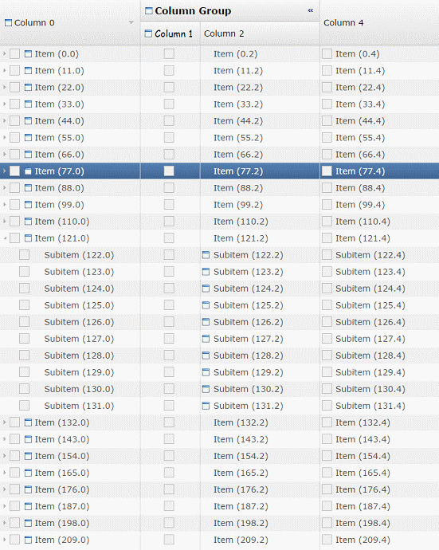
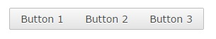
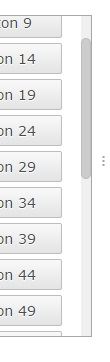

The RAP port of the Nebula Grid (including GridViewer) has been moved from the RAP Incubator to the RAP repository. It supports a subset of the API from the Grid found in the Nebula Release, now also including setAutoHeight.

Resizing a column with AutoHeight and WordWrap enabled
The Nebula Grid also works with RWT.MARKUP_ENABLED. It is included in the RAP target platform and can be used simply by importing the org.eclipse.nebula.widgets.grid package, making it single-sourcing capable. The Nebula Grid ports for RAP 2.x versions will remain in the Incubator.
The Button widget now supports RWT.MARKUP_ENABLED, allowing you to use an HTML subset in it's text. Also, Tree and Table now fully support RWT.TOOLTIP_MARKUP_ENABLED. This was previously not the case if the tooltip text was provided by a ColumnViewer.
Until now every edge of a widget in RAP had to have the same border width, style and color. Now every widget that supports the border shorthand property also supports the four properties border-left, border-right, border-bottom and border-top. This enables a number of new design choices, like visually merging neighbouring widgets.

In this case a RowLayout was used with spacing set to 0 and the following custom variants:
Button[PUSH].left {
border-radius: 2px 0px 0px 2px;
border-right: none;
}
Button[PUSH].middle {
border-radius: 0px;
border-left: none;
border-right: none;
}
Button[PUSH].right {
border-radius: 0px 2px 2px 0px;
border-left: none;
}
The Control.getBorderWidth() method will from now on return the biggest width of the widgets four edges.
The up/down and left/right buttons of scroll bars can now be hidden by setting the background-image property of ScrollBar-UpButton and ScrollBar-DownButton to none. This is the case in the default theme. Further theming enhancements on the ScrollBar are planned for M3.

The focus frame (represented in the theming by Button-FocusIndicator, Combo-FocusIndicator and FileUpload-FocusIndicator) will no longer be visible if the widget is focused by the mouse. Like in MS Windows, it will only be visible when focused using the keyboard.
The TabItem has several new theming properties:
Since border now also allows styling the different edges of the widget, the following properties have been removed:
There is also a new state on TabItem that the item is a child of TabFolder with the SWT.BOTTOM style flag:
The Combo-List now has an even state, allowing the Combo drop-down to have alternating background colors.